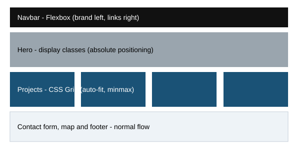

Topic 2: CSS Architecture and Responsive Layout
A Utility-Class Model
The template has no style block and no stylesheet of its own. Appearance comes from W3.CSS classes plus 14 inline style attributes. The navigation bar alone carries six classes.
| Class | Declaration | Effect |
|---|---|---|
w3-flex | display:flex | Brand and links sit in one row |
w3-top | position:fixed; top:0 | Bar stays at the top |
w3-wide | letter-spacing:4px | Widely spaced letters |
w3-padding | padding:8px 16px | Space inside the bar |
w3-card | box-shadow | Soft shadow under the bar |
Selectors and the Cascade
- Element:
h1{font-size:36px} - Universal:
*,*:before,*:after{box-sizing:inherit} - Class, descendant, and pseudo-class:
.w3-striped tbody tr:nth-child(even)
W3.CSS 6 marks many utilities !important, so an inline style cannot beat .w3-padding but can beat .w3-content.
Layout Map

The Grid: auto-fit with minmax
grid-template-columns: repeat(auto-fit, minmax(300px, 1fr));
gap: 16px;The browser fits as many 300 px columns as it can, so no media queries are needed.
| Browser width | Columns |
|---|---|
| Below about 648 px | 1 |
| About 648 to 963 px | 2 |
| About 964 to 1279 px | 3 |
| 1280 px and wider | 4 |
Weakness: the w3-hide-small class hides the whole menu at 600 px and below, with no replacement. A details and summary menu would fix this without JavaScript. (This site avoids the problem by letting its menu wrap.)